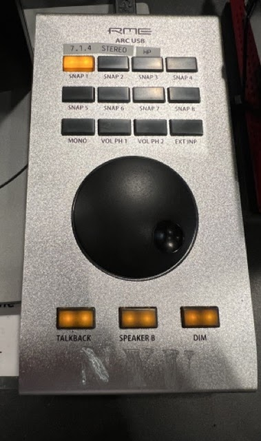
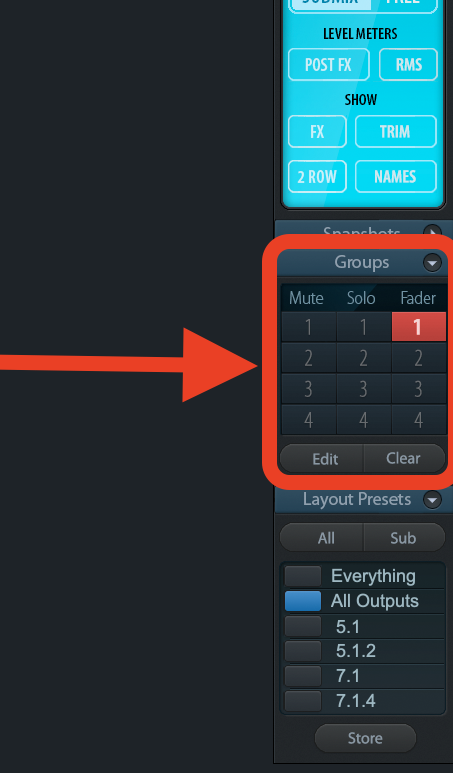

MPAP ROOM GUIDES
TotalMix Guide
TotalMix FX manages surround sound and monitoring for the Research Lab. By default, it simply routes MADIFace outputs 1–23 directly to speakers 1–23. As such, you'll rarely need to adjust more than volume, but this guide outlines additional features you may use.
Table of Contents
Getting Started with TotalMix
Make sure you have completed the First-Time Installation instructions to install the necessary drivers and software required for TotalMix.
TotalMix should look like this when opened. If not, ensure the TotalMix2025.tmws file is loaded.

General Layout
In the mixer window, you’ll see two rows of faders:
- Software Playback (top row): these represent audio streams coming from your computer (e.g. DAW outputs, Atmos channels from Apple Music).
- Hardware Outputs (bottom row): these represent the actual physical outputs to the speakers and headphones.
Controlling Level
Move the wheel on the ARC USB remote. By default, this controls the level of all speakers at the same time. In TotalMix, you'll notice all faders (except for the Headphones) move together. These red colored faders are grouped, allowing the wheel on the ARC USB remote to control the level of the entire surround mix. It is unlikely that you will want to deviate from this behavior, but in order to change the level of individual speakers, you may disable grouping by un-selecting "1" from the Groups section on the right. The red faders will turn grey, and be able to be changed individually. Re-select "1" to reactivate the group and control the overall volume again.


Channel Strip Controls
Each channel in TotalMix features a comprehensive set of controls that allow you to shape and route your audio signals:
Level Controls
- Fader - Main volume control for the channel
- Gain - Input/output gain adjustment
- Trim - Fine adjustment for precise level matching
Routing Controls
- Mute/Solo - Quickly silence or isolate channels
- Pan - Stereo positioning for mono sources
- Routing Matrix - Send signals to multiple outputs simultaneously
Processing Options
- EQ - Built-in equalizer for frequency shaping
- Dynamics - Compression and limiting controls
- Effects - Reverb, delay, and other spatial effects
✅ Remember: In the Research Lab setup, most channels are grouped together so the ARC USB remote controls the entire surround mix as one unit.
Submix Mode vs Free Mode
TotalMix operates in two distinct modes that affect how you interact with the mixer and how audio is processed:
Submix Mode (Default)
- Channels are pre-mixed before being sent to outputs
- Allows for complex routing and processing chains
- Perfect for surround sound mixing and live monitoring
- Changes affect the entire mix, not individual channels
Free Mode
- Direct routing from inputs to outputs
- Minimal processing and latency
- Ideal for recording and zero-latency monitoring
- Each input can be routed independently to any output
⚠️ Important: The Research Lab template is configured in Submix Mode. Switching to Free Mode will change the behavior of all routing and may require reconfiguring your setup.
To switch between modes, use the Mode button in the top toolbar. The current mode is indicated by the button's appearance and the overall layout of the interface.
Global Buttons
TotalMix features several global control buttons that affect the entire mixer or specific groups of channels:
Master Controls
- Master Mute - Instantly silence all outputs
- Master Dim - Reduce all levels by a fixed amount
- Talkback - Enable microphone input for communication
Group Controls
- Group Mute - Mute entire groups of channels simultaneously
- Group Solo - Isolate groups for focused monitoring
- Group Volume - Adjust levels for entire channel groups
Utility Functions
- Save Workspace - Store current mixer configuration
- Load Workspace - Recall saved configurations
- Reset - Return to default settings
- Snapshot - Capture current state for later recall
🔧 Essential: Always save your workspace after making changes to preserve your custom routing and settings. Use descriptive names for different configurations (e.g., "5.1 Surround Mix", "Stereo Recording Setup").
Quick Tips
- Always save your workspace after making changes
- Use the Research Lab template (TotalMix2025.tmws) as your starting point
- Test audio routing before starting important sessions
- Keep the TotalMix window open during audio work